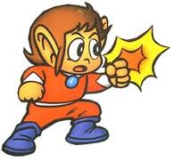

Alex Kidd JS/TileD Demo
Another quick demo of melonJS Engine, and the TileD loader
The TMX files are coming from TROAK, a Alex Kidd PC/SDL remake available here
If you wish more information about this demo, please also visit my blog here.
note : the canvas is zoomed "on the fly" before being displayed (else it's just too small, as the original resolution is only 320x240) which is (in terms of performances) not the best way to do it.
Instructions : arrow keys to move, X to jump
(0/0 fps)